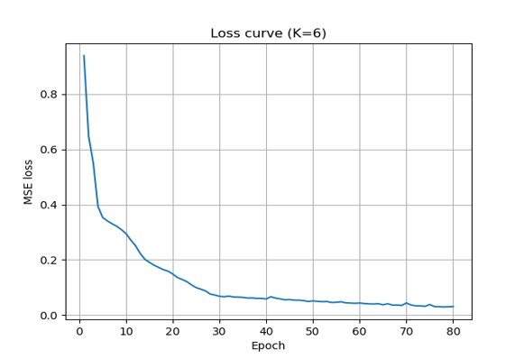
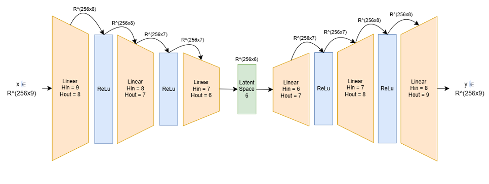
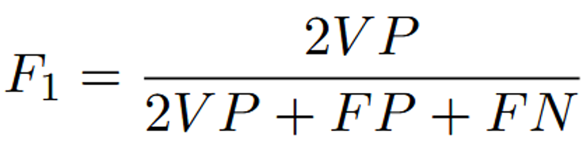
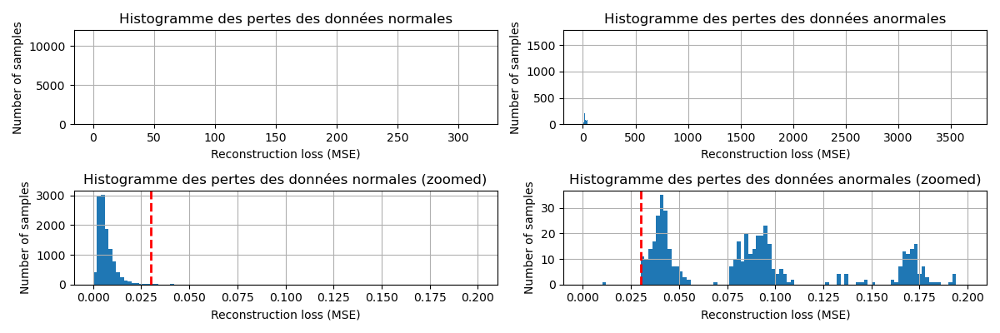
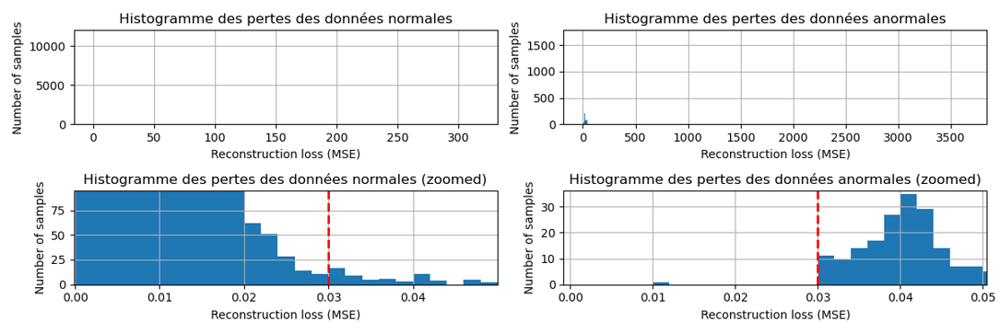
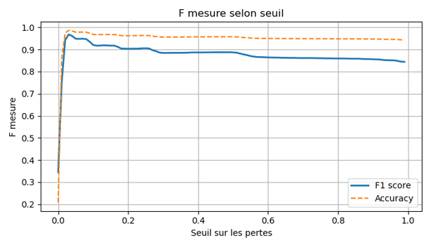
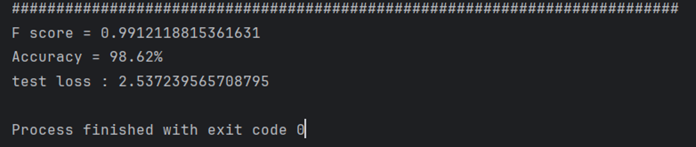

Réseau Encodeur-Décodeur sur le dataset Shuttle
Université de Sherbrooke
Ce projet implémente un réseau de neurones de type auto-encodeur dédié à la détection d'anomalies sur le dataset Shuttle. Le modèle apprend à reconstruire exclusivement les données normales afin d'identifier les déviations lors de la phase de test.
La sélection des paramètres repose sur une analyse statistique des données pour garantir une compression optimale.
Le choix de k=6 pour l'espace latent est justifié par l'analyse spectrale suivante, où 6 valeurs propres se distinguent clairement :

Figure 1 : Évolution de la perte MSE (K=6) montrant la stabilisation du modèle.
Le réseau adopte une structure symétrique en "sablier" pour extraire les caractéristiques essentielles des signaux.
L'utilisation de couches ReLU après chaque couche linéaire introduit la non-linéarité nécessaire pour capturer les relations complexes dans les données. L'absence d'activation en sortie permet une reconstruction non contrainte des valeurs continues.

Figure 2 : Schéma de l'architecture du réseau Encodeur-Décodeur.
L'entraînement est optimisé pour traiter les données normales tout en ignorant les anomalies.
La classification finale repose sur le calcul de l'erreur de reconstruction (MSE). Un seuil est déterminé pour séparer le "sain" de l'"anormal".

Formule de la F-Measure utilisée pour l'évaluation.

Distribution complète des erreurs de reconstruction — données normales vs anomalies.

Figure 4 : Vue zoomée — séparation entre les distributions normales et anormales.

Figure 5 : Évolution de la F-measure et de l'Accuracy selon le seuil sélectionné.
Les performances finales démontrent la haute précision du modèle pour ce jeu de données.

Résultats finaux de détection d'anomalies sur le dataset Shuttle.
Ce projet démontre qu'un auto-encodeur léger avec un espace latent de dimension 6 suffit pour détecter efficacement les anomalies dans le dataset Shuttle. L'approche de reconstruction — entraîner le modèle uniquement sur des données normales puis seuiller l'erreur MSE — s'avère robuste et interprétable.